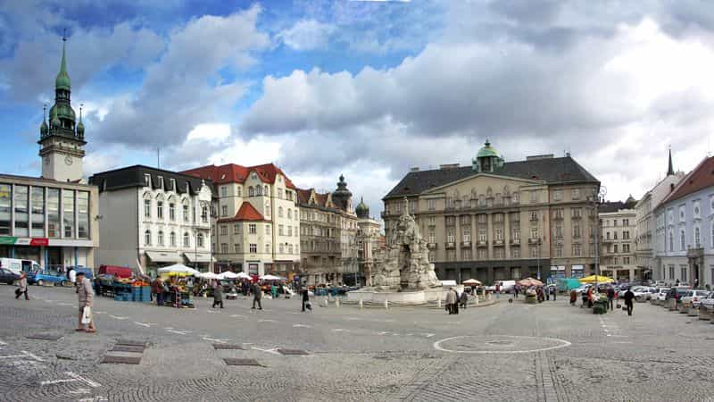
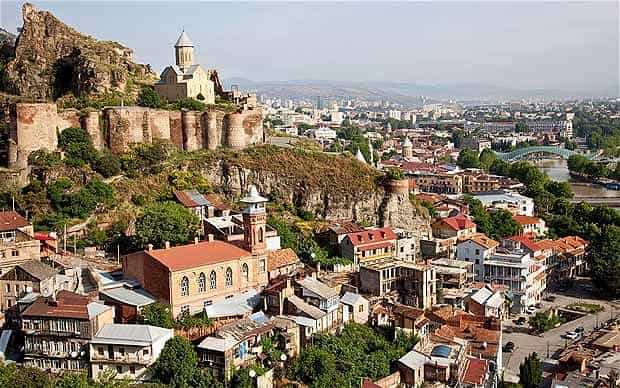

< < < Back
4 Additional European Countries To Emigrate To If The West Collapses – Return Of Kings
It is good to see that many of us here will stand their ground in case of a total cultural collapse. Among the many arguments backing this decision, was the possibility to purchase guns and get organised, coming from our mostly American readers.
As a Frenchman, I do not have this luxury, being surrounded by liberals that would rather take my hypothetical guns and join the invading hordes than being called “racists.” Sadly, we are still waiting for Charles Martel to Make Frankia Great Again.
If the nimble navigator does not reach the White House, I would perhaps have to consider one of the following countries for permanent resettlement.
As previously stated in part I of this series:
The nations are reviewed using the following criteria:
- Level of English
- Difficulty of the local language(s)
- Gun laws
- Quality of women (considering beauty, femininity, careerism etc):
- Non-native immigrant population
- Possibility of a long-term stay
- Male competition
- Importance of religion
- Culture of entrepreneurship
- Presence of masculine culture/traditional sex roles
- Quality of food
- Importance of physical fitness in the local culture
- Likelihood of 50-year similar cultural collapse
1. Serbia

Level of English: Medium. Serbians do speak English and have a keen interest in improving it.
Difficulty of the local language(s): Medium. South Slavic. Uses frequently the same etymology as Russian or Polish. Knowing Serbian, you can get around in Bulgarian, Croatian and Slovenian.
Gun laws: Lenient. Strong gun culture and second highest number of guns per capita worldwide.
People over 18 are allowed to own guns, but must be issued a permit. People with criminal history, mental disorders, history of alcohol and illegal substance abuse, cannot be issued a permit. (…) background check prior to license approval. no court appeal possible if denied. At home, the guns must be kept in a “safe place”.
Quality of women: High. The “Polish girls” of the Balkans. They like sex, give importance to their elegance and appearance but don’t send the “ice queen” vibe that Ukrainians and Russian can have.
Non-native immigrant population: Low. Albanians as they are next door. Few Westerners apart from the occasional tourist or student (for now).
Possibility of a long-term stay: Possible (for Westerners). More here. Or be Steven Seagal.
Male competition: Medium to High. Decent foreigner value. As I said previously, Serbs probably have one of the highest level of game in EE.
Turbofolk culture and recent bloody conflicts give them a bad boy head start by treating women as replaceable commodities and war spoils.
Importance of religion: Medium to high. Orthodox Christianity is the second most important religion in Serbia after cold hard cash. Abortion is legal under request.
Culture of entrepreneurship: High. Money and success are revered. Corruption is omnipresent. You will need local advisers.
Presence of masculine culture and traditional sex roles: High. Masculine Balkan culture. Feminine girls that have been exposed to what a society looks like without male order. Western culture appeals to the youth. Hostile to homosexuals.
Quality of food: High. The products are usually local. Tasty, fresh cuisine. Fairly easy to obtain supplements and good meat.
Importance of physical fitness in the local culture: High. Fitness is seen as an important part of life. Women are usually fit and fitness is popular. Fairly low obesity rate.
Likelihood of 50-year similar cultural collapse: Low. In view of the recent events, their worst decision would be to join the EU. European and global culture has already brought a lot of damage.
2. Czech Republic

Level of English: Medium to High. Due to the high presence of tourists, it is easy to find an English speaker in Czech Republic.
Difficulty of the local language(s): High. Speaking Czech will improve your value but it is a commitment. Could help you in Polish but legions of words are false friends.
Gun laws: Lenient. Recreational shooting is the third most popular sport in the Czech Republic, behind football and hockey..
Gun licenses may be obtained in a way very similar to a driving license – by passing a gun proficiency exam, medical examination and having a clean criminal record. Unlike in most other European countries, the Czech gun legislation also permits a citizen to carry a concealed weapon for self-defense.
Informative article here.
Quality of women: Medium to High. Love sex but less classy than Ukrainians or Serbians. Exposed to a lot of gringo seed since Prague turned into a tourist hell hole.
Non-native immigrant population: Medium. Avoid the capital. Especially if you cannot stand stag parties or pub crawls. Large number of foreign students. Weak nationalist sentiment.
Possibility of a long-term stay: Likely (for Westerners). More here.
Male competition: Low. Czechs are in majority low-T and beta. Girls love gringos but you will not be their first. No wonder it is a swingers (gateway to “cuck”) hotspot. Still not close to Denmark, the Jante cuck Emperors.
Importance of religion: Low. Czechia is one of the most atheistic and religiously-tolerant countries in Europe. Religious vacuum creates ideal terrain for a aggressive, conquering ideologies and men.
Culture of entrepreneurship: Medium: The economy is in growth. The local laws tend to favour foreign entrepreneurs.
Presence of masculine culture and traditional sex roles: Medium (in decline). Men become weaker and hipster weakling culture is on the rise. Girls love the carousel and their careers. Less and less hostile to homosexuals.
Quality of food: Medium. I was not impressed by the quality of the food. Products are of a reasonable quality. Relatively easy to buy supplements and good meat.
Importance of physical fitness in the local culture: Medium to low. Too much beer. Not enough sport. One of the Eastern nation where fitness is the least popular. Low to medium obesity rate.
Likelihood of 50-year similar cultural collapse: Possible. The xenophilic nature of the Czechs and their placid character could be their downfall. They are worst off than Poland foreigner-wise.
3. Georgia

Level of English: Very Low. Quite rare to find a Georgian that speaks English outside of a city. Start learning Georgian or Russian.
Difficulty of the local language(s): Very high. You will have to learn a new alphabet for Georgian or Russian. Georgian includes sounds unknown to foreigners like the consonant clusters, which will give you the impression of playing with the noodle alphabet.
Learn Russian. It will open you a lot of doors.
The word “Saqartvelo” (Georgia) in Georgian
Gun laws: Relatively lenient. Georgia’s gun laws follow the FSU model where “only allows licensed gun owners may lawfully acquire, possess or transfer a firearm or ammunition.”
High number of unregistered guns circulating since the fall of the Soviet Union.
Quality of women: Medium to High. Rare to find a blonde. Quite stylish but smallish. They are expected to be virgins when they get married. They are always exceptions. One night stands are very rare.
Non-native immigrant population: Low to Very Low. Not many Westerners. Large minority of Russians and Armenians.
Possibility of a long-term stay: Likely (for Westerners) up to 360 days. More here
Male competition: Medium to High. Foreigner value but the women are hardly accessible. Definitely not player orientated. Men there have a reputation for being horny and having aggressive game.
Importance of religion: Very High. Orthodox Christianity guides their life. An unmarried deflowered girl brings shame to the family. Girls have strict rules to follow. More on that (bit of a beta point of view).
Culture of entrepreneurship: Medium: Corruption is an essential part of the economy. Scams are everywhere. Georgians are known to be cunning in business. Get local help.
Presence of masculine culture and traditional sex roles: Very High. Very strong archetypes of man and woman. Western culture has only reached Tbilisi. Think that homosexuality is an anomaly and a disgrace.
Quality of food: High. Great fresh fruit and veggies. One of the best diet in the world. Relatively easy to buy supplements and good meat.
Importance of physical fitness in the local culture: Very High. Infrastructures are poor but people train regularly. National sports: wrestling, weightlifting, chidaoba and judo. A man has to be strong in Georgian culture. Girls do not always train but have an excellent diet. Very low obesity rate.
Likelihood of 50-year similar cultural collapse: Very Low. Managed to preserve their culture and religion. Political situation is stable for now. Not a land ideal for players but for men looking for a place where to raise a family.
4. Switzerland

Level of English: High. High number of expats and good level of English among the Swiss.
Difficulty of the local language(s): Medium. Choose between German, French and Italian depending on where you intend to go. Those languages will be useful for the future.
Gun laws: Lenient. Fourth highest number of gun per capita worldwide. Strong militia mentality and gun culture. More here.
Citizens of the following countries cannot buy guns in Switzerland: Serbia, Bosnia and Herzegovina, Kosovo, Macedonia, Turkey, Sri Lanka, Algeria and Albania.
Well, well, how can it be?
Quality of women: Medium to Low. Liberal, Westernized, career-driven but there are sluts in good numbers. European Pay-For-Play hotspot. Find a foreign girl or bring your own for long term relationship.
Non-native immigrant population: Medium to High. High number of foreigners attracted by the local level of life. Recurrent problems with Muslims from Albania, Kosovo and North Africa that refuse to assimilate. Strong national identity.
Possibility of a long-term stay: Likely (for Westerners). More here.
Male competition: High. Like in the West, fierce competition. Tinder-sponsored all-you-can-eat cock carousel for the girls and clown/psychopath game for the guys. Country hosts the highest number of rich concurrents in the world.
Importance of religion: Low. No state religion. Morals are very liberal. Pro-gay and abortion.
Culture of entrepreneurship: Very High Money talks. But not too loud. Free for all. The world’s piggybank.
Presence of masculine culture and traditional sex roles: Low. Religion is bad. Being manly is backward and being a slag is awesome. I am an attack helicopter anyway.
Quality of food: High. As in highly overpriced and sanitized. Easy to obtain supplements and good meat. If you have the coin.
Importance of physical fitness in the local culture: Medium to Low. The Swiss skies and hikes. That’s about it. Highly sedentary lifestyle. Medium obesity rate.
Likelihood of 50-year similar cultural collapse: Likely. Would be like Germany and France if they did not have a highly armed populace and a great sense of private property. Liberal ideas, multiculturalism and islamisation are on the rise.
Fais tes bagages!
I hope that those suggestions bring some light on the factors that will influence a hard but necessary decision, if the time unfortunately comes. It is in the people that rise against the cultural decline that I see hope.
But even if the plane is a relatively safe mean of transport, the pilot always brings a parachute. A bientôt.
 If you like this article and are concerned about the future of the Western world, check out Roosh's book Free Speech Isn't Free. It gives an inside look to how the globalist establishment is attempting to marginalize masculine men with a leftist agenda that promotes censorship, feminism, and sterility. It also shares key knowledge and tools that you can use to defend yourself against social justice attacks. Click here to learn more about the book. Your support will help maintain our operation.
If you like this article and are concerned about the future of the Western world, check out Roosh's book Free Speech Isn't Free. It gives an inside look to how the globalist establishment is attempting to marginalize masculine men with a leftist agenda that promotes censorship, feminism, and sterility. It also shares key knowledge and tools that you can use to defend yourself against social justice attacks. Click here to learn more about the book. Your support will help maintain our operation.
Read More: 4 European Countries To Emigrate To If The West Collapses